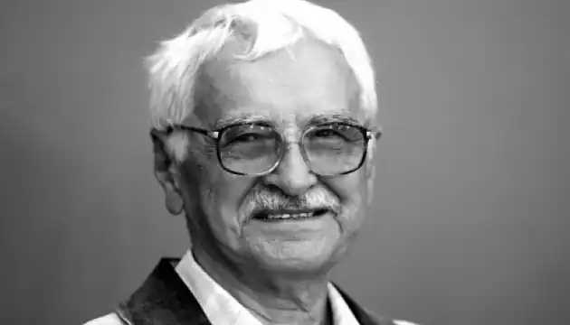
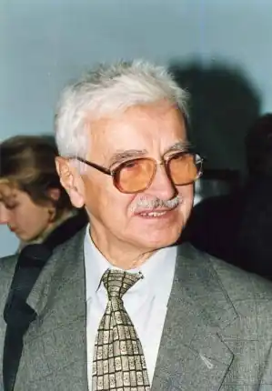
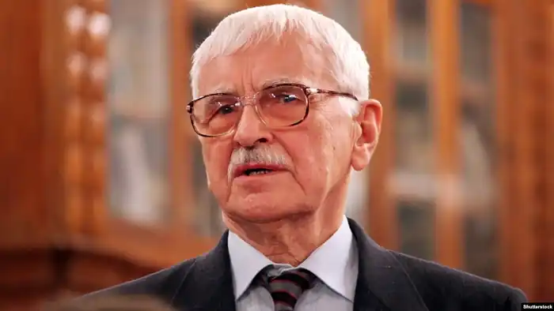

Євген Олександрович Сверстюк — український літературний критик, поет, мислитель, філософ, учасник руху шістдесятництва, політв'язень радянського режиму. Досліджував творчість М. Гоголя, Т. Шевченка, І. Франка. Доктор філософії. Автор одного з найважливіших текстів українського самвидаву — "З приводу процесу над Погружальським".
Народився 13 грудня 1927 року (але був записаний батьком 1928 роком) в с. Сільце (Горохівський повіт, Волинське воєводство, Польська Республіка, нині Горохівського району, Волинська область, Україна). Батьки — селяни.
Освіта — Львівський державний університет, відділення "логіка і психологія" філологічного факультету (1947—1952), потім — аспірант Науково-дослідного інституту психології Міносвіти України (1953—1956). Працював учителем української мови в Почаєві (1952), с. Богданівка Підволочиського району (1953)[3], викладачем української літератури Полтавського педагогічного інституту (1956—1959), старшим науковим працівником НДІ психології (1959—1960), завідувачем відділу прози журналу "Вітчизна" (1961—1962), старшим науковим працівником відділу психологічного виховання НДІ психології (1962—1965), відповідальним секретарем "Українського ботанічного журналу" (1965—1972). 1965 року в Одеському університеті був призначений день для захисту дисертації на ступінь кандидата педагогічних наук. Захист за тепер зрозумілих причин не відбувся. У 1959, 1960, 1961, 1965 (за виступи проти дискримінації української культури), 1972 (за промову на похороні Дмитра Зерова) роках його звільняли з роботи за політичними мотивами. Переслідуваний протягом років за участь у "Самвидаві" і протести проти арештів і незаконних судів, у січні 1972 року — заарештований і в березні 1973 року засуджений за статтею 62 ч. I КК УРСР за виготовлення і розповсюдження документів "самвидаву" до семи років таборів (відбував у ВС — 389/36 у Пермській області: на завершення отримав 15 діб карцеру, де сидів із кримінальними в'язнями, уник "програмованого" адміністрацією "зони" конфлікту з ними, вони на прощання подарували іконку) та п'яти років заслання (з лютого 1979 року — столяр геологічної експедиції в Бурятії). З жовтня 1983 до 1988 року працював столяром на київській фабриці індпошиву № 2. Улітку 1987 року з Сергієм Набокою (голова ради), Олесем Шевченком, Ольгою Гейко-Матусевич, Віталієм Шевченком, Миколою Матусевичем та іншими створили Український культурологічний клуб (УКК). Улітку 1988 року разом із товаришами з УКК біля пам'ятника св. Володимиру відзначили 1000-ліття Хрещення Русі в день початку "офіційного святкування" у Москві, незважаючи на "тупцяння чоловіків у чорних капелюхах". Інформацію про подію масово передруковували за кордоном. Після проголошення незалежності України був активним ідеологом дерадянізації країни. Широко відомі його публікації, присвячені подоланню радянського спадку в духовному житті. Нагороджений Орденом Свободи "…за видатні заслуги в утвердженні суверенітету та незалежності України, мужність і самовідданість у відстоюванні прав і свобод людини, плідну літературно-публіцистичну діяльність та з нагоди Дня Свободи…" згідно з Указом Президента України "Про нагородження Є. Сверстюка орденом Свободи" від 25 листопада 2008 р. № 1075/2008. Один з учасників ініціативної групи "Першого грудня" — створеного у 2011 році об'єднання українських інтелектуалів та громадських діячів. У її складі був одним з авторів Національного акту свободи — пропонованого Верховній Раді України суспільного договору, який був опублікований 14 лютого 2014 року і мав на меті знайти шляхи виходу з політичної кризи. Помер 1 грудня 2014 року, не доживши дванадцяти днів до свого 87-го дня народження. Поховання відбулося 4 грудня 2014 року на Байковому кладовищі.